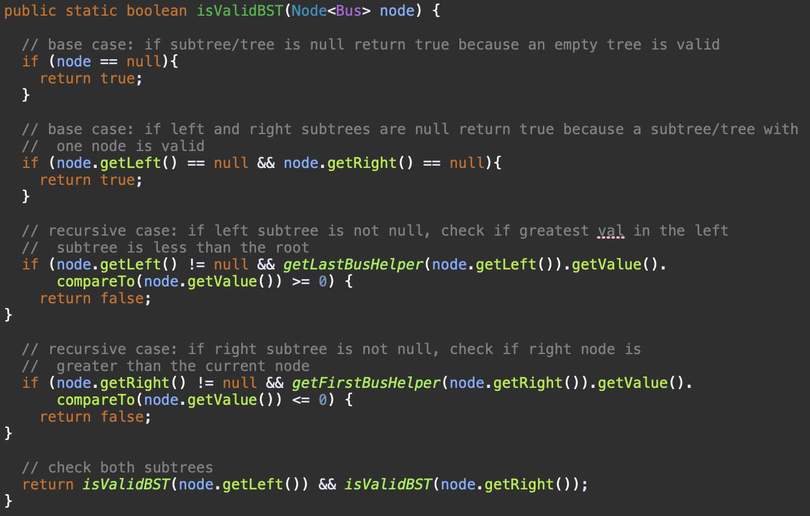
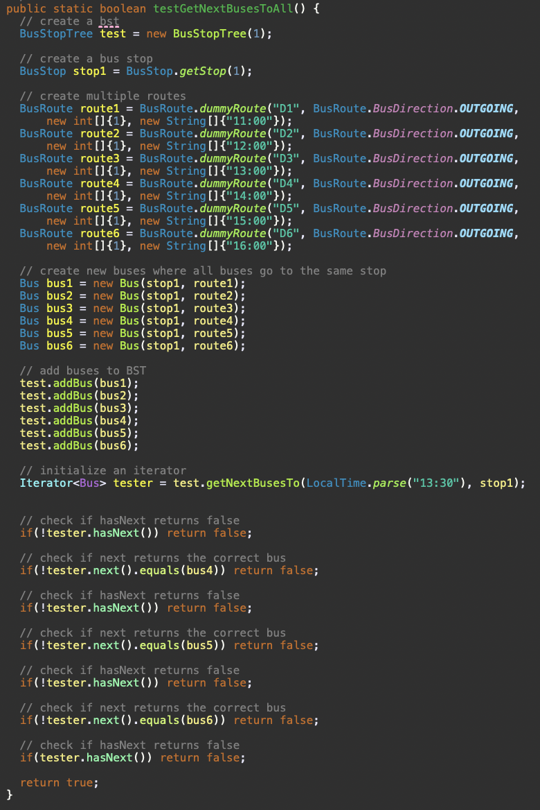
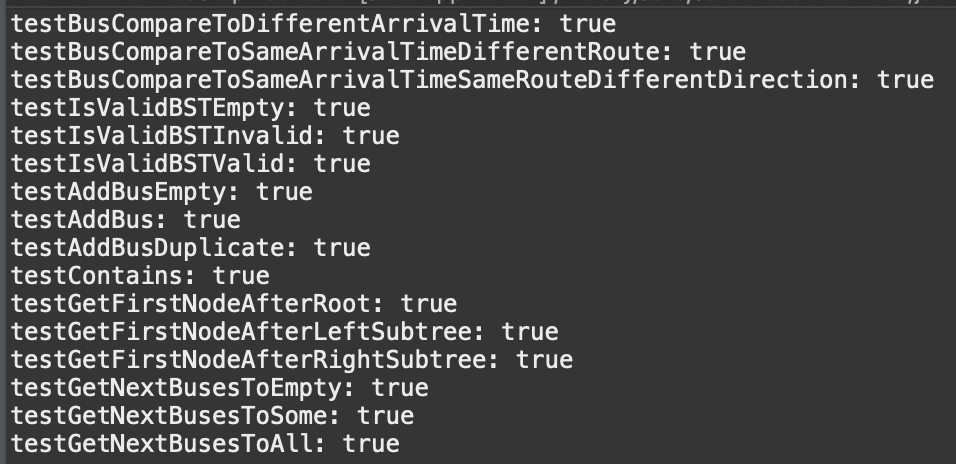

Below is an implementation of a method "isValidBST" that checks the correctness of the binary search tree that is the data structure used in this project.
Next is a test I have written to check multiple parts of this project.
In order to not show every single tester and it's code, here is a snippet of all the tests passing and a brief title description of them.
